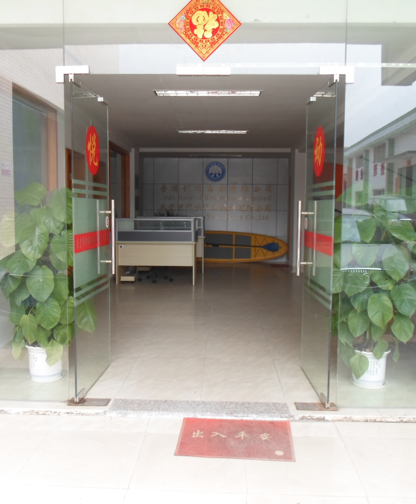

2012
The Spark of YD
Driven by a lifelong passion for the water, Ken Liu founded YD with a vision born on the open waves. The name represents “Yue Dong” (悦动)—translated as Joy in Motion—a philosophy that lies at the heart of everything we build. Ken believed that bad equipment should never compromise a great session. He set out to craft high-performance paddles that give water sports enthusiasts the freedom to push their limits, connect with nature, and confidently embark on every new adventure.